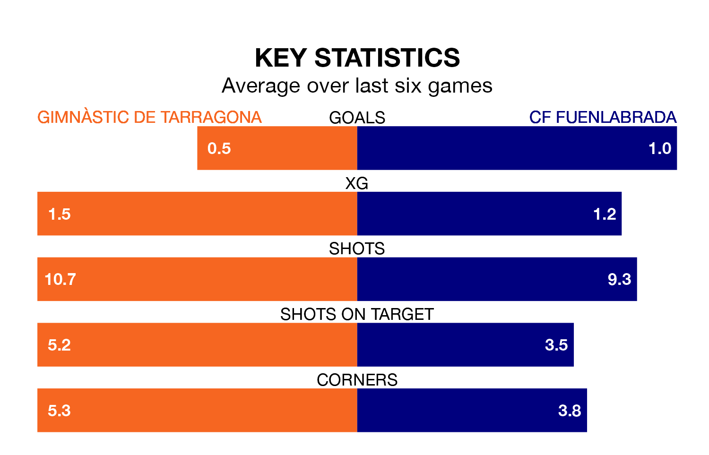

Gimnàstic de Tarragona are heavy favourites to keep all three points at home in Sunday's kick-off against CF Fuenlabrada.
Gimnàstic de Tarragona, who sit third in Primera Division RFEF Group 1 with 30 games played, are priced at 1.6 to seal victory at Nou Estadi de Tarragona.
Sitting eight places and 16 points behind them in the table, Fuenlabrada are 5.4 to win with *Betting Company*, while the draw is at 3.5.
In Alberto Varó Lara, Gimnàstic de Tarragona can rely on one of the league's safest pair of hands. He has kept 12 clean sheets in his 20 appearances this season, and only one other 'keeper – Cultural y Deportiva Leonesa's Miguel Bañuz Antón – has been able to prevent the opposition scoring on more occasions in Primera Division RFEF Group 1.
In Fuenlabrada's net, José Javier Belman Calvo has six clean sheets in 24 games. He has conceded a goal every 86 minutes, 80% more often than the 158 minutes between goals for Varó Lara.
With 29 goals in 30 games so far this season, the away team are scoring at below the league average rate with 1.0 goals per game. And they are conceding at an average rate, letting in 33 goals at a rate of 1.1 per game.
The hosts, meanwhile, are average scorers, with 1.1 goals per game. They have conceded 0.6 goals per game.
Gimnàstic de Tarragona are in mixed form in Primera Division RFEF Group 1, with two wins and two draws from their last six games.
And also with two wins and two draws over that period, Fuenlabrada's form is identical – they have both taken eight points from 18.
Gimnàstic de Tarragona's last match was on March 31, a 1-0 win against SD Ponferradina, with Marc Fernández Gràcia getting the goal for Gimnàstic de Tarragona.
Fuenlabrada lost 2-1 against CE Sabadell last time out, on March 30, with Raúl Hernández Grados on the scoresheet.
Updated: 16:41 (UTC), 04/04/24